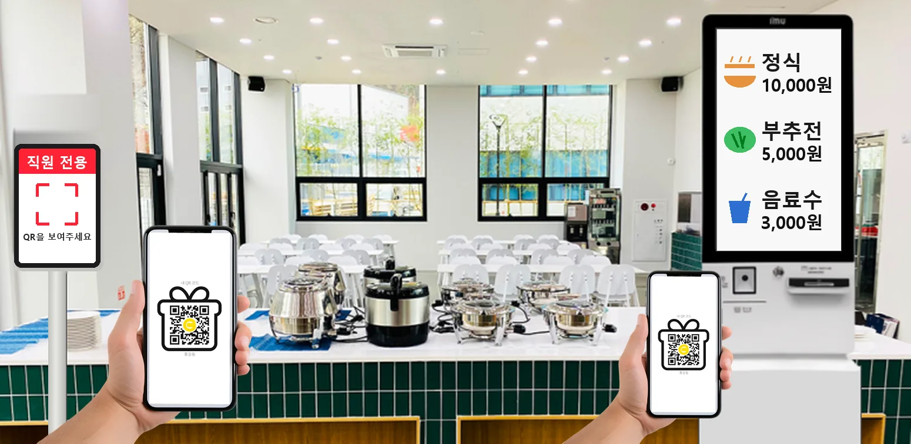
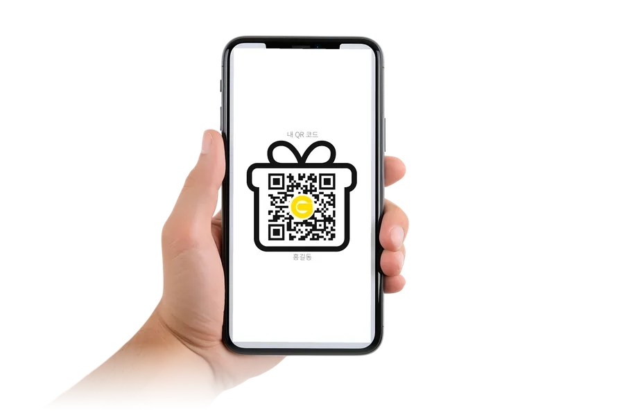
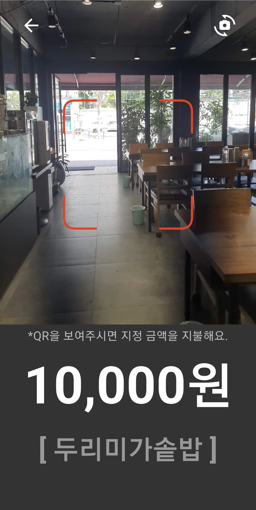
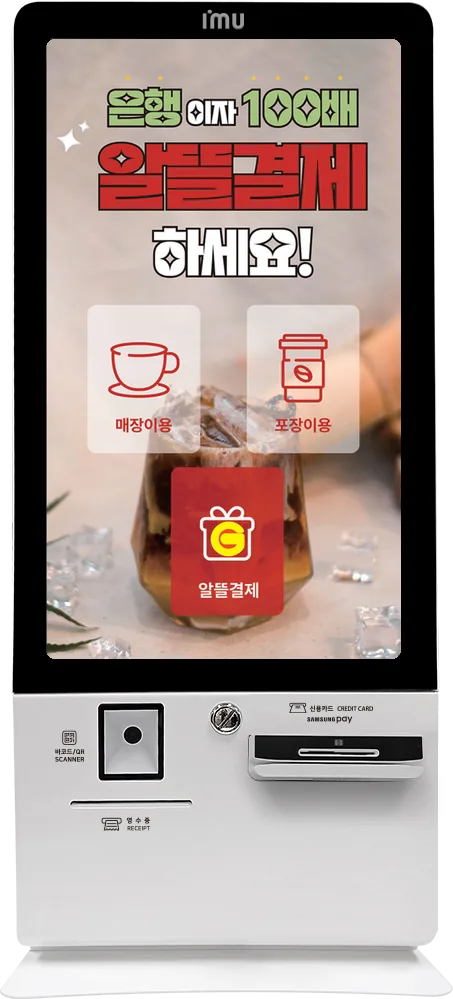
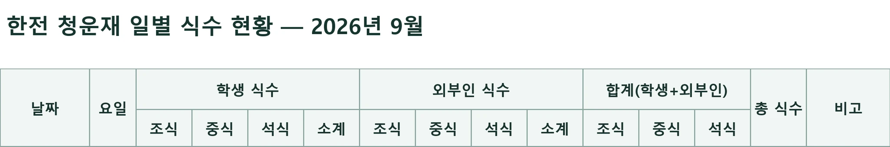
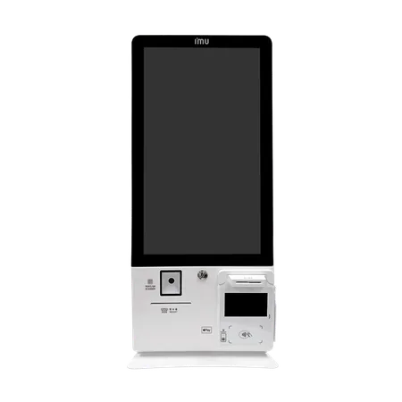
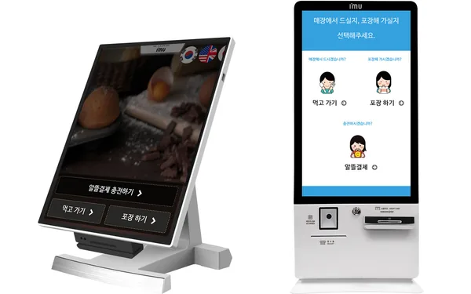
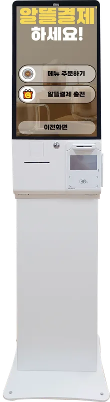
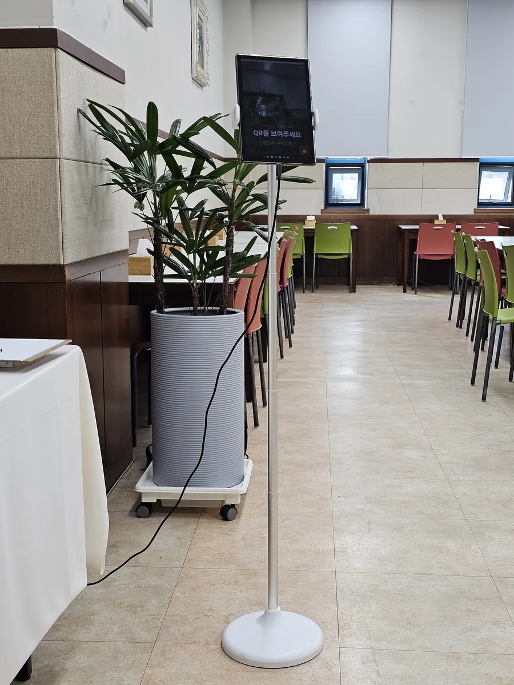
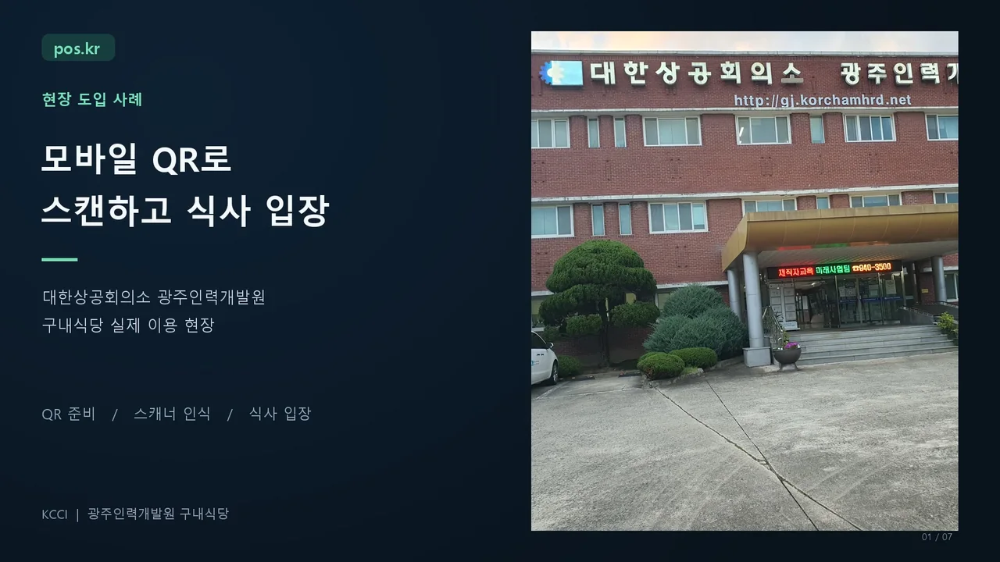

등록 소속인원 50명 이하
모든 프로그램
Plus도 포함해 전부 무료
가입비·월 구독료·문자 QR 발송비까지 무료입니다. 기간 제한 없이 이용하세요.
스마트폰 QR로 식수 기록부터 회사별 정산 자료까지.
전용 PC·스캐너·식권카드 추가 구매 없이 시작합니다.
스마트폰으로 식사를 확인하고, 회사별 이용 기록과 정산 자료를 관리합니다.

기존 스마트폰·태블릿을 스캐너로 활용합니다. 이용자는 문자 QR 또는 앱 QR을 제시합니다.
직원 QR과 방문객 카드 결제를 함께 운영할 때 선택합니다. 기기 구입·임대 조건은 별도입니다.
새 현장 준비부터 이용자 변경, 발주처 정산 자료 제출까지 살펴보세요.
기존 기기를 활용하고, 이용 현장에 맞춰 관리자 설정을 준비합니다.
스마트폰·태블릿을 스캐너로 활용합니다. 회사 관리자와 식당 관리자가 이용 조건을 설정합니다.
이용자에게 개인별 QR을 그림문자(MMS)로 보냅니다. 문자 QR 이용자는 앱 설치 없이 제시할 수 있습니다.
(이용자 앱을 받으면 내역 확인과 부가 기능도 활용할 수 있습니다)
개인 QR을 읽으면 이용 조건에 따라 기록됩니다. 정해진 횟수·포인트 한도를 적용합니다.
(신규 이용자는 관리자 등록·확인 후 이용)


스마트폰 기본 운영에 더하는 선택 사항입니다. 지원 기종·구입·임대 조건을 확인하세요.

📷 QR 스캐너직원 QR 결제 💳 카드 단말방문객 카드 결제처음 온 외부 고객은 키오스크에 신용·체크카드로 즉시 결제.
카드 단말기를 따로 둘 필요가 없습니다.
직원은 같은 키오스크의 QR 스캐너에 앱 QR을 스캔.
카드 결제와 QR 결제가 한 기기에서 연동되어 동시에 운영됩니다.
고정 직원 + 방문 고객. 키오스크 1대로 QR·카드를 함께 받습니다.
식수 인원이 많은 현장. 키오스크 + QR리더를 함께 세워 편한 쪽에서 결제합니다.
연동 가능한 기종은 요금제의 지원 기종 안내에서 확인하세요. 기기별 구성·기능과 구입·임대 조건은 상담으로 안내합니다.
조회·집계·자료 내려받기로 현장의 이용 내역을 확인합니다.
이용자별 식수 내역을 확인하고, 필요한 거래를 대조합니다.
월간 정산 자료를 PDF·엑셀 파일로 내려받습니다.
회사용 양식에 맞춘 식수 리포트를 선택할 수 있습니다.

50명 이하에서는 Plus를 포함한 모든 프로그램을 무료로 시작하고, 맞춤 식수 리포트도 이용할 수 있습니다. 기간 제한은 없습니다. 실제 사례 보기 ↗ · 요금·기능 확인 ↗
Plus도 동일하게 적용됩니다. 50명 이하에서는 서비스 요금이 전부 무료이며, 기간 제한은 없습니다.
등록 소속인원 50명 이하
Plus도 포함해 전부 무료
가입비·월 구독료·문자 QR 발송비까지 무료입니다. 기간 제한 없이 이용하세요.
회사와 이용 내역을 사후 정산
회사와 후불 정산
회사와 계약한 이용자의 식수 기록을 집계하고 정산 자료를 확인하는 운영에 적합합니다.
회사별 가격·정책 세분화
현장에 맞춘 운영
회사별 맞춤 식수 리포트와 그림문자 비용이 포함됩니다. 적용할 기능과 조건을 함께 확인합니다.
50명까지 무료로 시작하세요. 모든 프로그램에 동일하게 적용되며 Plus도 포함합니다. 기간 제한은 없습니다.
선택 기기: 키오스크 구입·임대 조건과 지원 기종은 별도 안내합니다.
전체 요금·무료 조건 보기 ↗회사 관리자·식당 관리자·이용자가 각자의 역할에 맞게 확인합니다. 기능별 플랜은 요금제에서 안내합니다.
지원 횟수·금액, 이용자 등록 권한과 재사용 사유를 관리합니다.
일·주·월 단위로 횟수·포인트를 자동 충전. 미사용 잔여분은 소멸합니다.
회식·근무 외 식사 등 1회성 정책을 부여하고, 부서별 또는 회사 비용으로 구분해 기록합니다.
식당의 신규자 등록을 ON/OFF로 전환. 회사 관리자만 등록하거나 현장 등록을 허용하는 방식을 선택합니다.
2시간내 재사용 시 사유 입력을 팝업. 반복 이용 사유를 확인하고 기록으로 남깁니다.
이용 기록을 확인하고, 지원 키오스크와 필요한 운영 기능을 선택합니다.
결제 기록 시각을 기존 CCTV 영상과 대조할 때 참고할 수 있습니다. 현장 상황과 기록을 함께 확인해 이용 내역을 설명합니다.



지원되는 키오스크 기종을 연동합니다. 현장에 맞는 기기와 QR·카드 결제 구성을 상담으로 확인하고, 지원 기종은 요금제에서 확인하세요.
기숙사 식권 배포와 식수 집계, 교육기관 사전 신청 등 현장에 맞춘 운영 사례입니다.

▶ 실제 사용 영상 보기기숙사생 식권 배포와 협력업체 이용분을 구분하고, 위탁운영사 양식의 일별 식수 자료로 집계합니다.
맞춤 엑셀 집계 사례 보기 ↗
▶ 실제 사용 영상 보기교육 과정과 기숙·통학 조건에 맞춰 식사를 사전 신청하고, 대상별 식수 자료를 확인합니다.
식수 사전 신청·정산 사례 보기 ↗표시된 현장의 실제 운영 사례입니다. 회사별 맞춤 집계와 식수 사전 신청의 제공 범위는 플랜·추가 서비스에 따라 다릅니다.
이용 인원과 정산 방식을 알려주시면 필요한 기능과 비용을 함께 확인합니다.
이용 인원, 회사와의 정산 방식, 사용 중인 기기를 알려주세요.
무료 적용 여부와 필요한 플랜, 문자 QR·선택 기기 비용을 확인합니다.
관리자와 이용자 등록, 현장 이용 정책과 QR 사용 방법을 안내합니다.